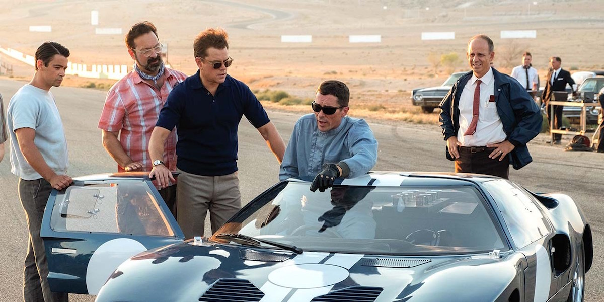
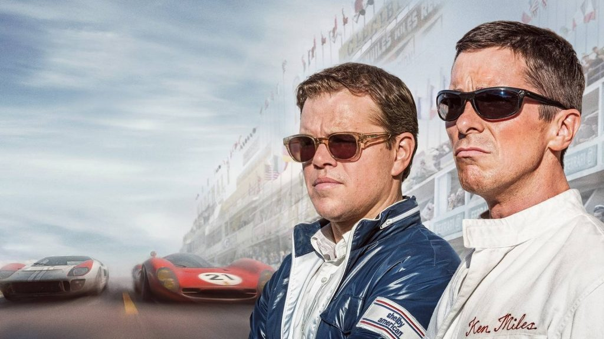

İki deneyimli oyuncu Matt Damon ve Christian Bale’in başrollerini paylaştığı Ford v Ferrari,geneli itibarıyla Büyük Yarış, kaynağını gerçek olaylardan, rekabetlerden alan yarış filmleri geleneğini devam ettiriyor gibi görünse de anlatı anlamında farklı alanlara doğru genişleyen bir yapıya sahip. Açılış sekasında başarılı bir yarış pilotu olarak tanıştığımız, Matt Damon’ın hayat verdiği Carroll Shelby, yarışmasına engel olarak sağlık problemleri nedeniyle aktif spor kariyerini noktalamış, işinin ehli bir yarış arabası tasarımcısı olarak karşımıza çıkıyor. Bale’in canlandırdığı Ken Miles ise aslında çok başarılı bir pilot olmasına rağmen, geçinilmesi pek de kolay olmayan bir karakter ve bu sebeple ekonomik zorlukla baş etmek zorunda.
Ford’un 1910’larda temeli atılan üretim sistemi, filmin geçtiği 60’larda eski şaşaalı günlerinden uzak. Kapitalizmin amiral gemisi kendine, değişmekte olan dünya düzeninde güvenle yüzebileceği yeni bir deniz arıyor. Daha sonraları post-Fordizm olarak tanımlanacak yaklaşımın erken bir örneği olarak motor sporları alanına girmek istiyor şirket. Bu alanda kazanılacak başarıların pazarlama ve tanıtım açısından fayda sağlayacağı düşünülüyor. İlk olarak o sırada sportif anlamda son derece başarılı olsalar da ekonomik olarak iyi günler geçirmeyen Ferrari’yi satın almak için harekete geçen şirket, Enzo Ferrari’nin bu teklifi yarış takımının yönetimini Ford’a bırakmak istememesi sonucu hedefine ulaşamıyor. Bunun üzerine Henry Ford’un torunu, o dönem şirketin başındaki isim olan II. Henry Ford, bir hükümdar edasıyla kurmaylarına Ferrari’yi alt edecek bir takım kurulması ve tabii otomobil üretilmesi için emri veriyor.
İtalyan motor sporları ve otomotiv devinin hikâyede bir kenara bırakıldığını düşünürsek, Ford v Ferrari’nin iki karakterinin karşısındaki asıl rakip Ford’un şirket işleyişinin kendisi gibi yansıtılıyor film boyunca. Mevcut görev ve konumları farklı olsa da ikisi de başarı odaklı, bu uğurda karşılarına çıkacak her engelle kıyasıya bir mücadeleye girmeye hazır sporcular olarak karakterize ediliyorlar. Fakat bu noktada film yine ciddi bir hataya düşerek kapitalizme, ekonomik önceliklere, şirket kârlılığına karşı kendi sportif değerlerini savunan iki karakterini, Hollywood’un tipik kahramanları olarak kodluyor. Shelby, yakışıklı, gerekli güç dengelerini kontrolü altında tutarak işinde başarılı olan biriyken; Miles yer yer tahmin edilemez, sadece güdülerinin peşinden giden bir asi. İkisinin arasındaki uyum oyuncuların performansları sebebiyle seyirci nezdinde karşılığını bulsa da, bu temsil kontrollü “iş adamı” ve onunla birlikte çalışan başarılı ama ehlileştirilmesi gereken “erkek”ten oluşan, Hollywood’un kahraman erkek ekiplerinden çok farklı değil. Hele bir de anlatıda hiçbir kadın karaktere alan açılmadığını, hatta bunun bir adım öteye taşınarak “Kaybetmek isteseydik direksiyona Doris Day’i geçirirdik” gibi bir cümle sarf edildiğini düşünürsek, Ford v Ferrari’nin, erkeklerin dünyasında kendilerinden ödün vermedikçe, doğru bildiklerini okudukça kendi bireysel başarılarını elde edebileceklerini tekrar eden muhafazakâr anlatılardan farklılaştığını söylemek oldukça zor.